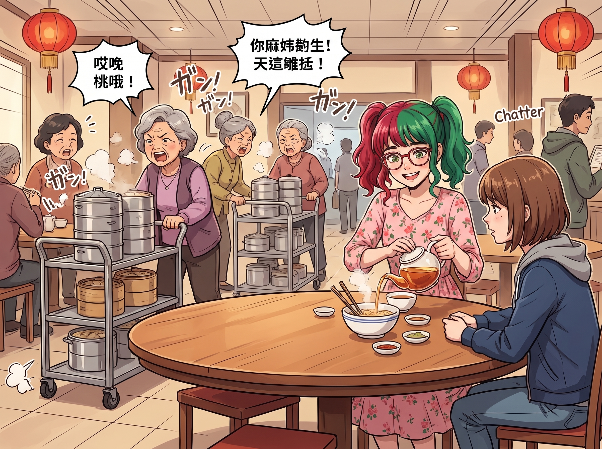
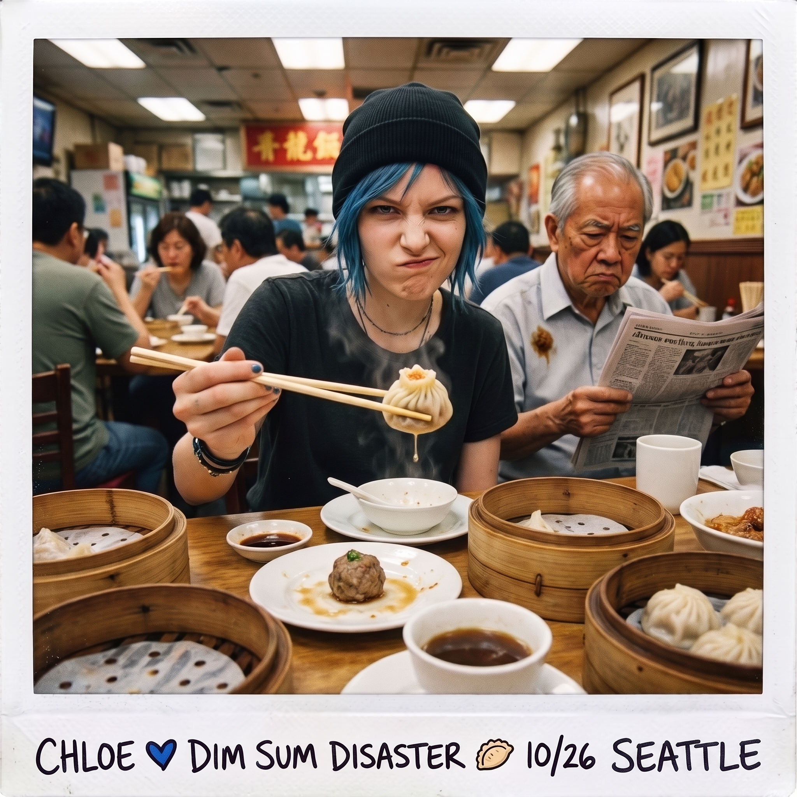
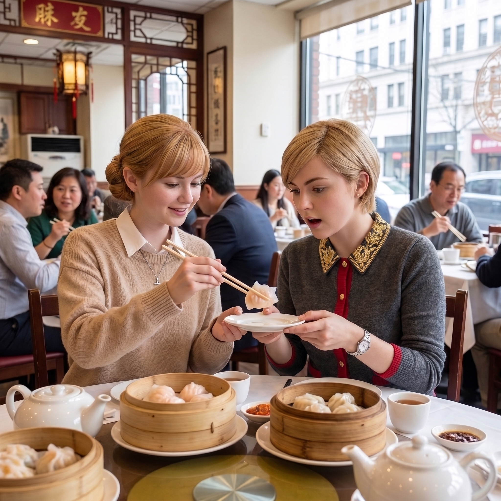

飲茶危機



西雅圖的中國城-國際區從來不缺正宗的推車式粵式飲茶酒樓。當二號車廂的小分隊在一個週日上午，被實習生 Lily 以「提升週末營養多樣性與觀摩高通量餐飲物流」為由，強行拉進一家名為「翠苑」的喧鬧酒樓時，一場跨文化的餐桌生存戰正式打響。
酒樓裡人聲鼎沸，推著點心車的阿姨們用中氣十足的粵語大聲報菜名，不鏽鋼蒸籠碰撞的聲音此起彼落。Lily 熟練地用廣東話跟部長要了一張大圓桌，並行雲流水地用熱茶燙洗了所有人的碗筷，這套行雲流水的「洗杯」儀式直接把另外四個人看傻了眼。
「Lily，妳的廣東話是從哪裡學的？」Max 忍不住好奇地問。
「看看我這張臉呀，Max 學姐。」Lily 隨手摘下圓框眼鏡，讓四人第一次毫無遮擋地端詳她的五官，指了指自己深邃的眼窩輪廓，「亞白混血。小時候是爺爺帶大的，他週末沒事就愛拖著我去唐人街的茶樓和茶餐廳報到，一坐就是一整個下午。吃完飯還會帶我去公園放風箏、折橡皮筋動力小飛機，教我怎麼調整機翼角度才能飛得又高又遠。廣東話這門語言，與其說是學的，不如說是泡出來的。」
但真正的災難，是從她們拿起筷子的那一刻開始的。
一、筷子的物理學與尊嚴
Chloe 拿筷子的姿勢就像是握著兩把架子鼓的鼓棒。在連續三次試圖夾起一顆滑溜溜的牛肉丸失敗，並差點將其彈飛到隔壁桌一位看報紙的老爺爺頭上後，阿卡迪亞灣的猛獸徹底放棄了文明。她冷笑一聲，直接將一根筷子像長矛一樣，狠狠刺穿了一顆燒賣，然後得意洋洋地舉在半空中：「看到了嗎？這才叫絕對的物理穿透力。去他的槓桿原理。」
Victoria 則陷入了嚴重的名媛包袱危機。她絕不允許自己向服務生要刀叉，因為那「太不體面」了。她試圖模仿 Lily 的握法，將筷子拿得極高，試圖展現法式餐桌般的優雅。結果，當她試圖夾起一塊沾滿醬油的蘿蔔糕時，手腕輕微發抖，蘿蔔糕在半空中精準解體，碎渣濺了她半身。Victoria 盯著自己裙子上的醬油漬，眼眶泛紅，咬牙切齒地低聲詛咒著這項擁有幾千年歷史的餐具發明。
Max 則是極度安靜的「手殘黨」。她發現自己只要一緊張，兩根筷子就會在指尖打架，最後變成一個叉號。為了掩飾尷尬，她索性放下筷子，端起拍立得相機，開始瘋狂給桌上的點心和大家狼狽的吃相拍照，試圖用「我在記錄藝術」來掩蓋自己即將餓死的事實。
唯獨 Kate 展現出了令人震驚的適應力。小天使不僅握姿標準，甚至還能精準、溫柔地幫 Max 和 Victoria 夾菜。她那雙平時用來畫水彩和翻閱聖經的手，此刻穩如泰山。面對大家驚訝的目光，Kate 只是溫柔地笑了笑：「我以前在教會參加過為期一個月的亞洲宣教文化體驗營呢。而且，夾點心就像對待迷途的羔羊一樣，不能用力逼迫，要順著它們的紋理溫柔引導哦。」
二、各自的本命點心
在度過了最初的餐具危機後，這頓早茶迅速演變成了一場味蕾的狂歡。每個人都找到了屬於自己的「本命點心」。
Chloe 最愛的是蜜汁叉燒包。這種碳水化合物與高熱量糖分的完美結合，深得街頭霸王的喜愛。最關鍵的是，吃叉燒包不需要用筷子！她可以像吃漢堡一樣直接用手抓著，大口咬下那鬆軟開裂的麵皮，讓甜膩的叉燒醬汁溢滿口腔。「這才是真正的靈魂食物！」Chloe 一邊嚼一邊含糊不清地宣告，「誰再逼我吃白水煮雞胸肉，我就把這屜叉燒包塞進他的排氣管裡！」
Victoria 在經歷了蘿蔔糕的挫敗後，將目光鎖定在了晶瑩剔透的水晶蝦餃皇上。這道點心完美契合了名媛的審美：外皮半透明，隱約透出裡面粉紅色的鮮蝦，精緻得像是一件微雕藝術品。她優雅地用勺子輔助，將一整顆蝦餃送入口中。鮮脆的蝦肉和帶著淡淡竹籠香氣的汁水在嘴裡迸發，Victoria 滿意地揚起下巴：「勉強達到了 Chase 財團宴會的開胃菜標準。」
Max 對鮮蝦滑腸粉產生了濃厚的興趣。那種猶如絲綢般順滑的米漿外皮，在淋上甜醬油後散發出迷人的光澤，這在攝影師眼裡簡直是絕佳的靜物題材。當然，這也是全場最難用筷子夾起來的食物。最後還是 Kate 溫柔地用公筷幫她夾進了碗裡。Max 滿懷感激地吃著這份口感層次豐富的美食，覺得這簡直是世界上最適合內向者的治癒系食物。
Kate 的最愛毫無懸念是酥皮蛋撻。剛剛出爐的蛋撻散發著濃郁的奶油與蛋香，千層酥皮脆弱得一碰就掉渣，中間的蛋液像金黃色的布丁一樣微微顫動。「這種感覺，就像是在一個下雨的午後，被一條溫暖的羊絨毯包裹著一樣呢。」小天使發出了滿足的嘆息。
三、法醫級的鳳爪處理
然而，當這場溫馨的早茶進行到尾聲時，實習生 Lily 端上了她的專屬最愛，直接讓車廂的兩頭猛獸當場石化。
Lily 面前擺著一籠豉汁蒸鳳爪。在 Chloe 和 Victoria 驚恐的注視下，Lily 推了推圓框眼鏡，用筷子精準地夾起一隻雞爪。她沒有像普通人那樣胡亂啃咬，而是展現出了宛如法醫解剖般的恐怖效率。
「鳳爪的精髓在於軟骨與膠原蛋白的無損剝離。」Lily 語氣平靜得像是在朗讀驗屍報告，只見她嘴唇微動，不到五秒鐘，一根根乾淨剔透、沒有一絲肉絲殘留的小骨頭，就被整齊劃一、按長短順序排列在了骨碟邊緣。
「老天啊……她是在吃飯還是在做生物實驗？」Chloe 嚇得連手裡的叉燒包都掉回了盤子裡，下意識地摸了摸自己的手指骨節。
「這太野蠻了！」Victoria 抓著餐巾，驚恐地往後縮了縮。
只有 Kate 依然保持著微笑，淡定地喝了一口普洱茶。在這喧鬧的西雅圖中國城酒樓裡，伴隨著點心車的推拉聲和 Lily 吐出骨頭的輕微喀噠聲，這場荒謬卻充滿煙火氣的早午餐，完美地填飽了這五個在行政與時空邊緣瘋狂試探的靈魂。